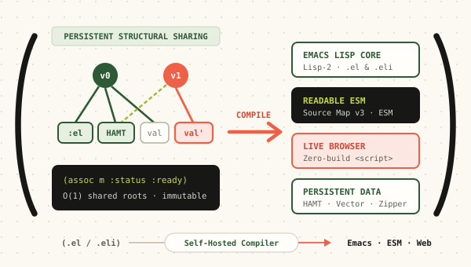

Read Lisp
Parse .el and .eli forms, persistent collection literals, modules, checked macros, and explicit host boundaries.
Emacs-first Lisp · v0.1.3 · npm
Write Emacs Lisp .el or modular .eli with persistent
immutable collections, unified structural matching, lexical modules,
and structured async—compiled to readable ECMAScript with Source Map v3.

Keep plain Emacs Lisp running by default while opting into persistent values, contracts, destructuring, lexical modules, and structured concurrency—lowered by the self-hosted compiler into clean ES modules and source maps.
Parse .el and .eli forms, persistent collection literals, modules, checked macros, and explicit host boundaries.
Expand sandboxed macros deterministically, check static contracts and pre/post assertions, validate transients, and verify tail positions.
Both compiler generations produce matching IR, structured source diagnostics, and external Source Map v3 locations.
Run the same code across GNU Emacs, Node 24+, Bun 1.4+, and modern browsers with live in-page compilation.
Switch between core language mechanisms. The right pane explains the guarantees preserved across Emacs Lisp and ECMAScript hosts.
(defun sum-to (n total)
(if (= n 0)
total
(recur (1- n) (+ total n))))tail position verified
arguments evaluated once, left to right
function frame reused as a loop
constant JavaScript stackStandard Emacs Lisp works unchanged by default, while modular language extensions add static contracts, persistent data structures, unified pattern matching, lexical modules, structured async, and explicit JavaScript interop.
Emacs Lisp default semantics (Lisp-2, nil-only falsiness, integer division, condition-case, pcase) plus opt-in declare type, purity, and pre/post assertions.
7 immutable collections (List, Vector, HAMT Map/Set, Queue, AVL Sorted Map/Set), cl-defstruct-persistent records, zippers, Transducers, and owner-checked Transients.
defun-case multi-arity dispatch, let-bind / defun-bind / pcase-value destructuring, immutable let-const, constant-stack recur, and thread-some-> pipelines.
defmodule with lexical-private bindings, explicit :export / :import, and defvar-once hot-reload state, plus sandboxed defmacro-checked.
defun-async and await inside lexical with-async-scope lifetimes with automatic sibling cancellation, timeouts, and bounded async-channel queues.
Keep persistent Lisp values distinct from mutable js-array / js-object containers, with lossless js-false, js-null, and js-undefined sentinels.
All 42 implementation units, 35 mandatory verification criteria,
and 173 stabilization units are complete in the retained core
evidence, alongside 46 library modules / 601 checked exports and a
reproducible self-hosted compiler in v0.1.3. General
automatic tail-call optimization begins as a Draft and Pending
specification.